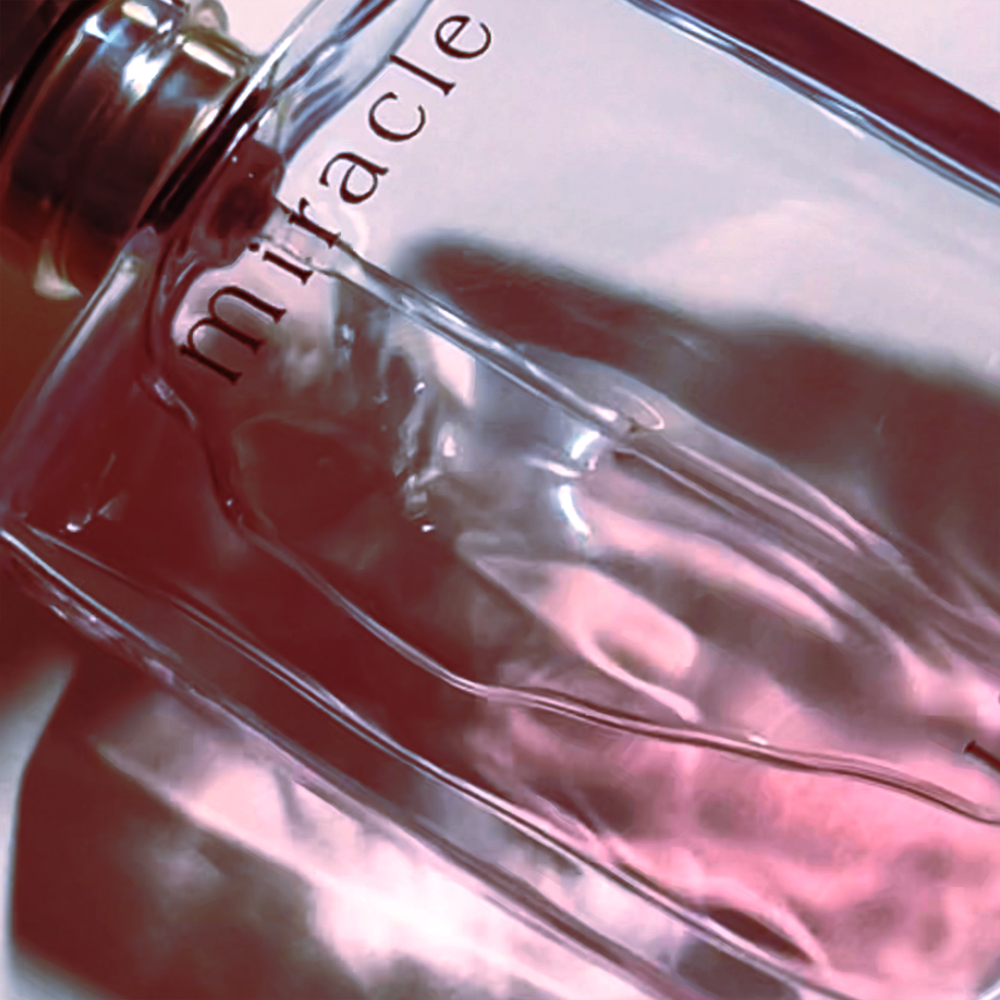
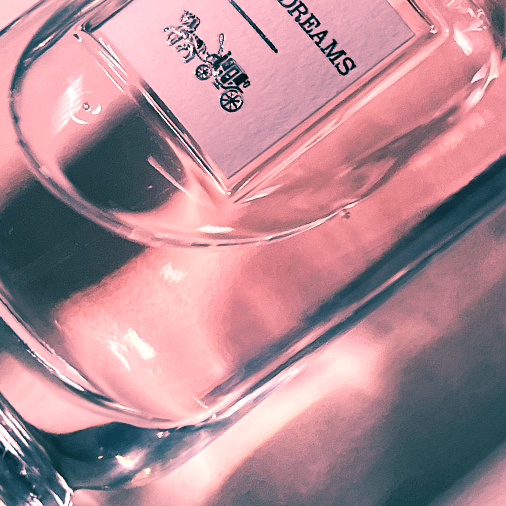
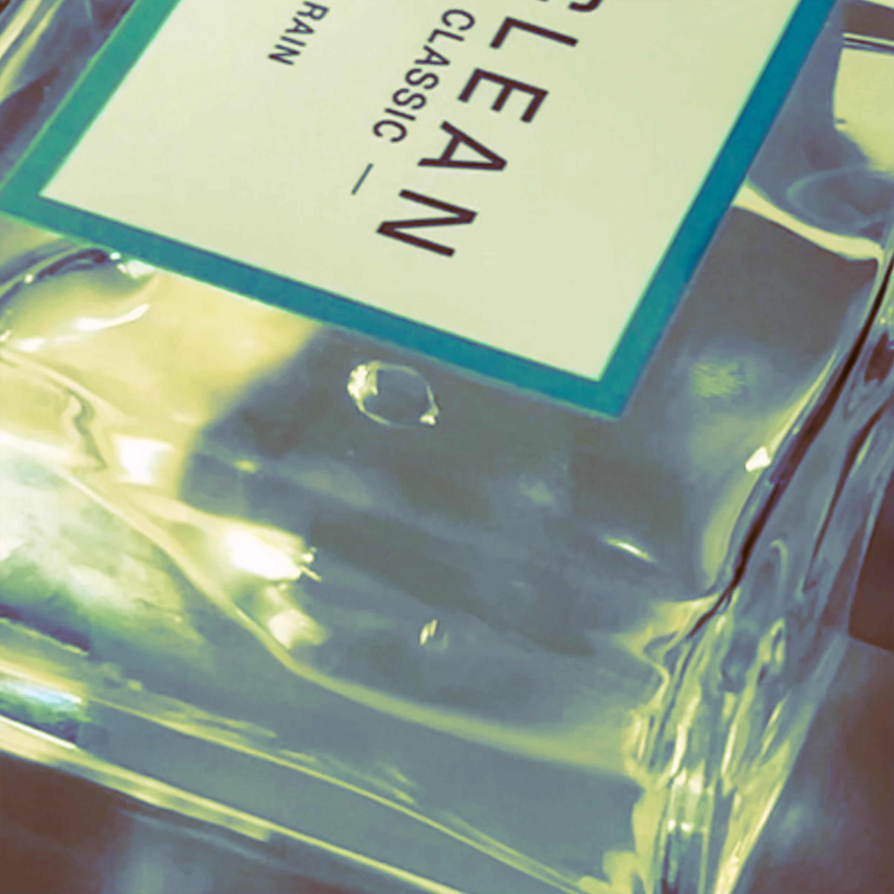
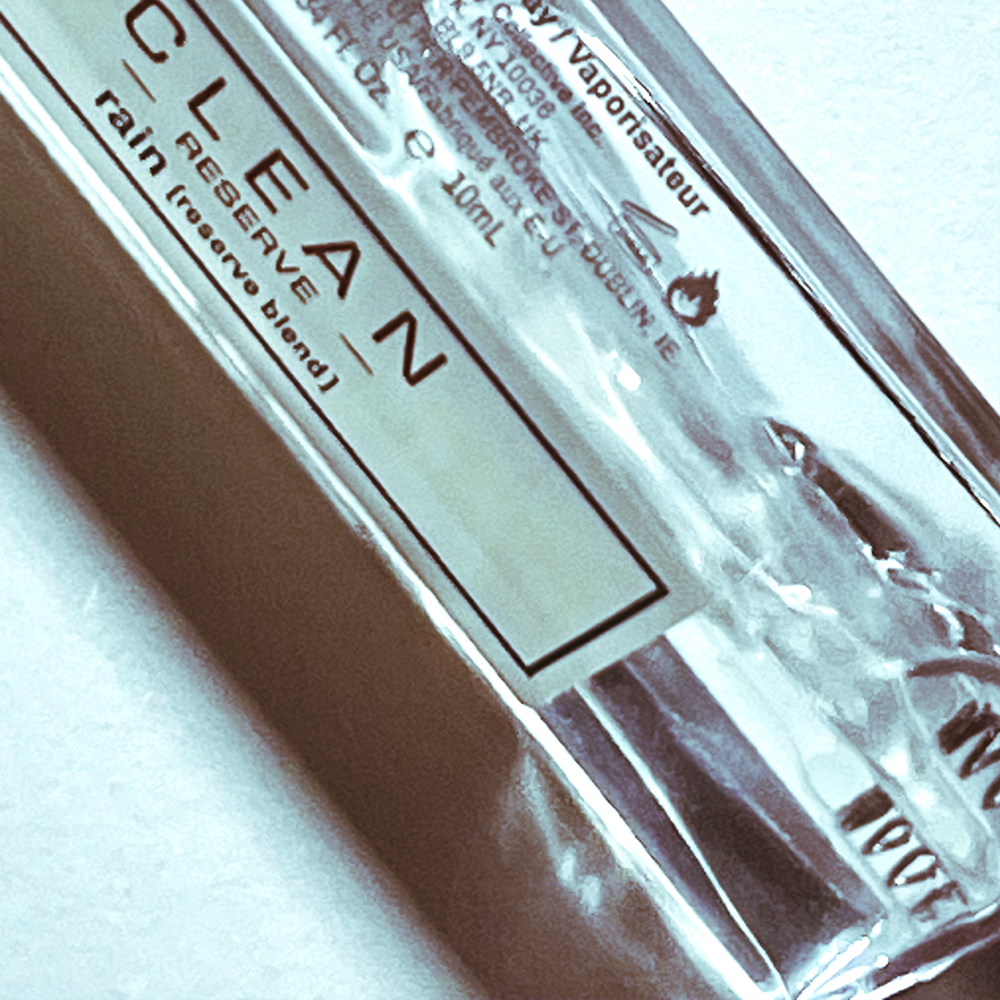

MY PeRFuMes

MIrAcLe
-Space1/Time1-
- Very strange rose smell.
- The smell of high school I don't want to remember.
- Does it smell bad?
- It doesn't belong to you, but it becomes your rare favorite.
- Want to find it again in another space and time.
- Don't hate it.

DrEAm
-Space2/Time2-
- The candy entered the nasal cavity, and soon disappeared.
- It doesn't smell like the house, but it smells like the house.
- So sweet.
- Spray to meet the person you like, the person won't show up.
- Spray to meet the person you don't like, the person will show up.
- Surprise meeting, painful beginning, dull ending.
- Not in keeping with the temperament.

RaiN
-Space2/Time2-
- Mix the dirt and grass in a blender after it rains.
- You bought it from someone who didn't know you.
- Go buy the most expensive package.
- I was dizzy, and now I'm not dizzy.
- If only it was a scent diffuser.
- You used it to cover up some unpleasant smell. This is even worse.

rAIn
-Space3/Time1-
- Soft.
- Like RaiN? Not at all.
- Bought on a whim, but it was planned for a long time.
- Perfume without memory. Don't provide memories.
- It seems to be the only thing that exists as an object rather than an odor.